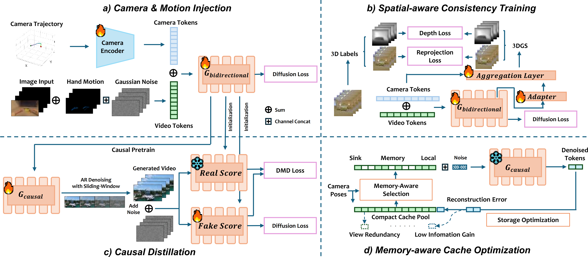

Abstract
Interactive world models enable training AI agents within an unlimited curriculum of rich simulation environments. We present WorldScape, an autoregressive video diffusion model capable of real-time, streaming prediction of how visual observations evolve given navigation or manipulation actions. The generated observations implicitly construct a world that exhibits physical consistency and memory. WorldScape is powered by four key components: (1) For interactivity, we design a unified interaction-aware conditioning scheme that enables visual control over both navigation and manipulation. (2) For 3D spatial consistency, we introduce spatial-aware consistency training incorporating 3D Gaussian Splatting–based supervision to inject geometric priors into generation. (3) For real-time capability, we adopt an asymmetric distillation strategy that converts the bidirectional diffusion backbone into a fast autoregressive model, achieving a generation speed of 16 FPS on a single H100 GPU. (4) For memory, we develop a geometry-aware KV cache optimization with hierarchical memory management to maintain long-range spatial coherence in streaming generation. Experiments demonstrate that WorldScape achieves balanced state-of-the-art performance across visual quality, interactivity, memory, and real-time capability, maintaining superior overall competence compared to existing models.

WorldScape supports indoor/outdoor spatial navigation (WASD + camera rotation) and dexterous hand manipulation.
Interactive Demo
Camera Control (Navigation)
Spatial navigation using WASD keys and camera rotation controls.
Hand Control (Manipulation)
Dexterous hand manipulation for pick-and-place tasks.
The Challenge: What Makes Interactive World Models Hard?
Building a truly interactive world model requires simultaneously satisfying four properties that are individually difficult and jointly elusive:
1. Interactivity. A world model must understand and respond to general forms of action — from walking through a room to picking up an object with a specific hand pose. Most existing models either rely solely on language instructions or support only a narrow action type (e.g., camera movement or manipulation, but never both). A unified framework for universal control remains an open problem.
2. 3D Spatial Consistency. Generated frames must respect coherent 3D geometry. Without explicit spatial supervision, models trained purely on pixel reconstruction tend to exhibit spatial collapse — objects abruptly change shape or drift across frames as the camera moves. The world should look the same whether you approach a chair from the left or the right.
3. Real-Time Capability. For interactive use — whether for agent training or human immersion — the world model must generate in sync with real time. State-of-the-art high-fidelity models often require minutes per video, far from the sub-100ms latency needed for responsive interaction. Diffusion models compound this challenge with their inherent multi-step denoising.
4. Memory. When a user navigates away from a region and then returns, the model should remember what was there. Without explicit memory, generative models hallucinate inconsistent content upon revisitation, making it impossible to build a coherent, persistent world.
Method
WorldScape addresses all four challenges through a staged training and inference pipeline:

Framework of WorldScape. (a) Camera & Motion Injection, (b) Spatial-aware Consistency Training, (c) Causal Distillation, (d) Memory-aware Cache Optimization.
Unified Interaction-Aware Conditioning
Camera trajectories are represented as Plücker embeddings and injected into the DiT backbone via a lightweight camera encoder. Hand motions are converted to pose videos, concatenated with the input along the frame dimension, and fed jointly into the model — enabling a single unified architecture to handle both navigation and manipulation without task-specific heads.
Spatial-Aware Consistency Training
Beyond standard flow matching loss, WorldScape jointly supervises depth maps and multi-view RGB renderings reconstructed from a ViT-based 3DGS aggregator. This multi-task objective organically injects 3D structural awareness into a model that would otherwise optimize purely in pixel space:
ℒtotal = ℒfm + αℒdepth + βℒrender
Causal Distillation via Sliding-Window Self Forcing
A bidirectional teacher model is distilled into a fast causal student using a rolling denoising window. Chunks at different noise levels are allowed to attend to each other within a sliding window, providing mutual refinement while a monotonically advancing KV cache preserves causal consistency. The DMD objective aligns the student's distribution with the teacher's. The result: an 8.7× speedup with minimal quality degradation.
Memory-Aware KV Cache Optimization (MACO)
During streaming inference, past KV cache entries are managed through a three-level hierarchy: a permanent sink anchor, an optimized global memory pool, and a local sliding window. Cache entries are selected via geometry-aware similarity scores (view direction + camera position), deduplicated using an MDL-inspired information-gain gate, and globally pruned via Farthest Point Sampling when the memory budget is exceeded. This keeps memory complexity sublinear while preserving long-range spatial coherence.
Experiments
Quantitative Results on Spatial Navigation
WorldScape is evaluated on visual quality (VBench), interactivity (Trajectory Accuracy), memory (Memory Symmetry), and generation speed (FPS / pixel throughput). Among all models under 5B parameters, WorldScape achieves the best imaging quality, subject consistency, trajectory accuracy, and memory symmetry — while matching or surpassing several models with over 5B parameters on key metrics.
| Model | Visual Quality | Interactivity | Memory | Real-time | ||||
|---|---|---|---|---|---|---|---|---|
| Imaging Quality ↑ | Motion Smooth. ↑ | Subject Consist. ↑ | BG Consist. ↑ | Traj. Accuracy ↑ | Memory Sym. ↑ | FPS ↑ | Pixel Thru. ↑ | |
| Large Scale Models (≥ 5B) | ||||||||
| RealCam-I2V | 0.598 | 0.987 | 0.847 | 0.915 | 0.580 | 0.802 | 0.97 | 0.445 |
| AC3D | 0.451 | 0.992 | 0.878 | 0.923 | 0.595 | 0.909 | 0.11 | 0.038 |
| YUME 1.5 | 0.591 | 0.980 | 0.830 | 0.917 | 0.714 | 0.509 | 0.27 | 0.243 |
| HY-World 1.5 | 0.656 | 0.992 | 0.932 | 0.923 | 0.699 | 0.841 | 1.12 | 0.447 |
| Small Scale Models (< 5B) | ||||||||
| CamI2V | 0.503 | 0.989 | 0.799 | 0.908 | 0.691 | 0.376 | 1.34 | 0.220 |
| CameraCtrl | 0.451 | 0.981 | 0.735 | 0.880 | 0.679 | 0.414 | 5.02 | 0.329 |
| MotionCtrl | 0.458 | 0.975 | 0.723 | 0.875 | 0.662 | 0.305 | 5.13 | 0.336 |
| Astra | 0.535 | 0.981 | 0.782 | 0.885 | 0.608 | 0.440 | 0.41 | 0.164 |
| Matrix-Game 2.0 | 0.495 | 0.985 | 0.727 | 0.884 | 0.671 | 0.308 | 8.09 | 1.823 |
| WorldScape | 0.685 | 0.986 | 0.891 | 0.923 | 0.717 | 0.686 | 6.27 | 2.504 |
Qualitative Results: Spatial Navigation
Under diverse environments and lighting conditions, WorldScape maintains better spatial consistency and memory during interaction, enabling improved streaming visual generation compared to baselines.

Qualitative comparisons on spatial navigation across different environments.
Hand Motion Control
On the EgoDex test set, WorldScape achieves the best FVD and image-level FID scores across both general video generation baselines and dedicated pose-guided models, demonstrating temporally coherent and visually faithful hand-object interactions.
| Model | Video | Image | FPS ↑ | |
|---|---|---|---|---|
| FID-VID ↓ | FVD ↓ | FID ↓ | ||
| Large Scale Models (≥ 5B) | ||||
| Wan2.2-TI2V-5B | 129.14 | 1421.37 | 207.77 | 0.23 |
| HunyuanVideo-1.5 | 22.56 | 530.17 | 55.58 | 0.05 |
| Cosmos-Predict 2.5 | 14.47 | 612.84 | 52.11 | 0.11 |
| Small Scale Models (< 5B) | ||||
| MimicMotion | 25.86 | 601.20 | 47.84 | 0.15 |
| MagicDance | 68.48 | 1552.93 | 93.26 | 0.11 |
| WorldScape | 28.88 | 373.79 | 45.64 | 6.27 |
Qualitative Results: Hand Manipulation
Compared to existing models, WorldScape effectively performs pick-and-place tasks on objects based on the given hand motion. Baseline models often fail to produce temporally consistent hand-object interactions, while WorldScape generates stable and coherent manipulation sequences.

Qualitative comparisons on hand manipulation. WorldScape effectively performs pick-and-place tasks.
Ablation Studies
Each proposed component contributes measurably to performance:
- Spatial-aware Consistency Training: Removing it degrades memory symmetry from 0.919 → 0.866 and multiview consistency from 0.406 → 0.331.
- MACO: Replacing it with a naive rolling cache reduces memory symmetry from 0.570 → 0.536 on 145-frame sequences.
- Causal Distillation: Removing it reduces FPS from 6.27 → 0.72 — an 8.7× slowdown — while also hurting imaging quality.

Ablation of spatial-aware consistency training and memory-aware KV cache. Red boxes highlight shape distortion and content inconsistency when components are removed.